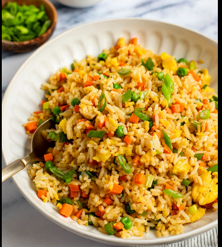

Fried Rice

Description
The image you are seeing is a classic friedrice image.
It is a very popular dish all over the world and it is quiet easy to make.Fried rice is a popular Asian dish consisting of cooked rice stir-fried with various ingredients like vegetables, eggs, and sometimes meat or seafood. It is often used as a way to utilize leftover rice and is known for its quick preparation and versatility.
People in countries like China, India, Japan, and many more are everyday enjoying preparing it because of its really good taste.
Ingridents
- boiled rice (preferrably day old boiled rice)
- onions
- capcicum
- green chillies
- oil for cooking
- green chilli powder
- salt
- egg (1 per person)
- tumeric (optional)
- cilantro (for topping it off)
- fried rice masala (if available)
Steps
- put the oil in a non sticky pan and let it get warm
- once the oil is done, put onions and chillies into the pan
- saute the onions and the chillies along side add salt, red chilli powder and fried rice masala to it
- once the onions turn slightly golden brown, add the boiled rice into it
- mix well and try not to break the texture of the rice while doing so
- crack an egg and fry it until the lower part is a bit crusty and the yolk is still flowy and we are gonna add this at last
- turn off the flame, let the friedrice sit there for couple of minutes with the lid off after adding the cilantro for a final touch
- add that cramy fried egg on the top of the fried rice and just wait a moment to endure the beauty you have just created
- serve warm and enjoy
Home